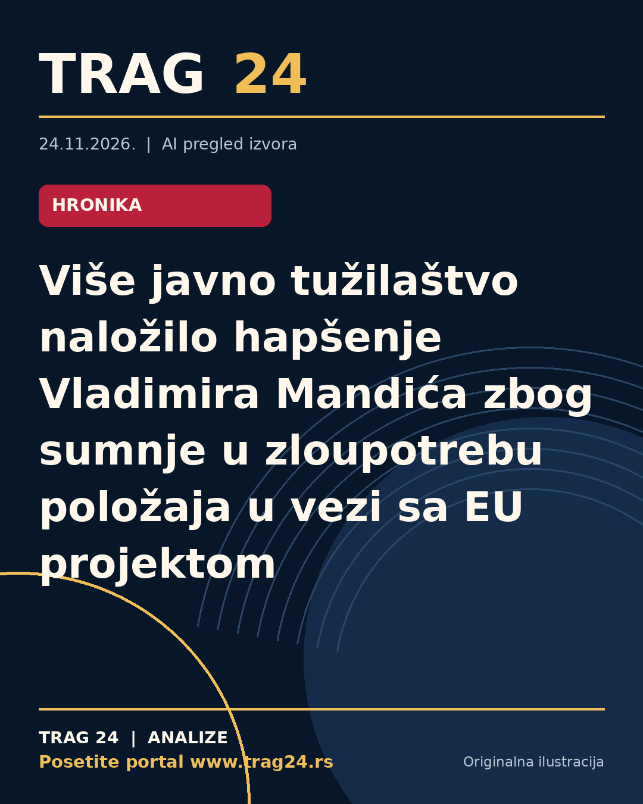

Više javno tužilaštvo naložilo hapšenje Vladimira Mandića zbog sumnje u zloupotrebu položaja u vezi sa EU projektom

ŠTA SE DOGODILO
Više javno tužilaštvo u Nišu, Posebno odeljenje za suzbijanje korupcije, naložilo je hapšenje Vladimira Mandića, vlasnika i odgovornog lica kompanije "Manco plus" d.o.o. Beograd. Mandić se sumnjiči za zloupotrebu položaja odgovornog lica u kontekstu sprovođenja IPA projekta prekogranične saradnje Bugarska – Srbija, koji je finansiran iz sredstava Evropske unije vrednih oko 275.320 evra. Za sada se nalazi van teritorije Srbije, a policija je u toku sa pretresima stanova i drugih prostorija u njegovom vlasništvu na više lokacija.
HRONOLOGIJA
Po nalogu tužilaštva, policija je izvršila pretres stanova i poslovnih prostora povezanih sa Mandićem. On nije pronađen na prijavljenoj adresi, a analiza lokacije njegovog mobilnog telefona pokazala je da trenutno nije u Srbiji. Zbog toga je raspisana potraga. Postupak se vodi u koordinaciji sa Komisijom Vrhovnog javnog tužilaštva. Podaci iz saopštenja i medijskih izveštaja potvrđuju da se istraga odnosi na malverzacije iz oblasti upravljanja sredstvima EU u pomenutom projektu.
ŠTA NAVODE IZVORI
Kurir, Telegraf i Vreme prenose da je Mandić osumnjičen za zloupotrebu položaja u vezi sa IPA projektom Bugarska – Srbija, finansiranim iz EU fondova, i da nije dostupan za privođenje jer se nalazi van zemlje. Pretrage se sprovode u njegovom vlasništvu. Kurir ukazuje na vrednost projekta u dinarskoj protivvrednosti i podvlači koordinaciju sa Vrhovnim tužilaštvom. Telegraf navodi detalje o uključenju Službe za borbu protiv korupcije dok Vreme ističe Mandićev raniji angažman i članstvo u SNS kao dodatni kontekst.
ŠTA JE POTVRĐENO
Potvrđeno je da je Više javno tužilaštvo u Nišu izdalo nalog za hapšenje Vladimira Mandića zbog sumnje na zloupotrebu položaja. Takođe, potvrđeno je da se istražuje postupak u vezi sa IPA projektom prekogranične saradnje Bugarska – Srbija, finansiranim iz fondova Evropske unije u vrednosti od oko 275.000 evra. Policija trenutno traga za Mandićem koji nije dostupan. Pretresi na više lokacija u njegovom vlasništvu su u toku.
ŠTA NIJE POTVRĐENO
Iz dostupnih izvora nije poznato na koji tačno način je izvršena zloupotreba položaja, niti detalji istrage o konkretnim radnjama koje se stavljaju na teret osumnjičenog. Nema informacija o njegovoj trenutnoj lokaciji osim da je van Srbije. Takođe, nema potvrde o mogućim daljim optužnicama ili o dodatnim učesnicima u slučaju.
ŠTA OSTАJE OTVORENO: Ostaje da se vidi gde se tačno nalazi Vladimir Mandić i kada će biti priveden radi istrage. Takođe, ostaje otvoreno šta će doneti dalji tok istrage i koji će biti konkretni rezultati u pogledu potvrde ili opovrgavanja sumnji o zloupotrebi projekta finansiranog od strane Evropske unije. Dodatno, nije jasno da li postoje druge osobe povezane sa ovim slučajem ili druge okolnosti koje će biti predmet postupka.
Izvori
- https://www.kurir.rs/crna-hronika/10171307/nisko-tuzilastvo-nalozilo-hapsenje-vladimira-mandica
- https://www.telegraf.rs/vesti/hronika/4438785-tuzilastvo-nalozilo-hapsenje-vladimira-mandica-zbog-malverzacija-sa-eu-fondovima-osumnjiceni-nije-u-zemlji
- https://vreme.com/drustvo/vladimir-mandic-van-srbije-tuzilastvo-nalozilo-hapsenje-policija-pretresa-njegove-nekretnine/
Ova analiza je pripremljena uz pomoć veštačke inteligencije na osnovu javno dostupnih izvora. Navodi izvora nisu nužno nezavisno potvrđeni.